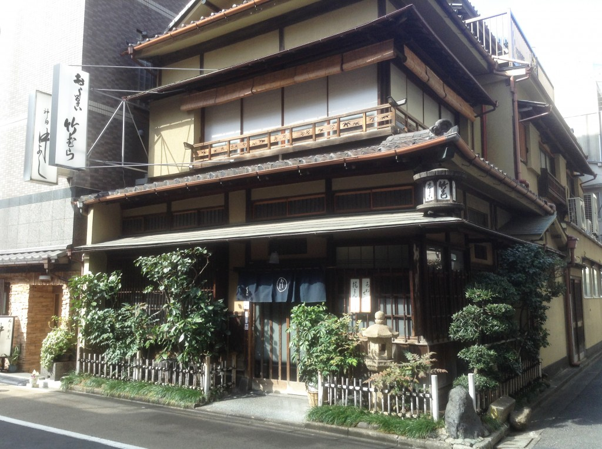

그녀가 2013년 방송 시작할 즈음 고등학교 2학년이었다는 점을 고려할 경우, 1996년 생으로 추정이 된다. 하지만 이 기획이 사실 2010년도 전격 g 매가진에서 부터 시작했던 점을 고려할 경우 그녀는 1993년 생이다.
<뮤즈 2년생의 철퍼덕 앉아있는 모습, 가운데가 호노카다. 신연재 시동이란 표현이 나와있다. 2010년도의 예고 사진이다.>
다시 말하자면 2018년 현시점에 그녀는 회사원이라는 말이다.문득 난, 그녀가 어디에서 어떤 일을 하고 있는지가 궁금해 졌다. 아이돌을 지망하다가 결국 아무 것도 안되어 이상한 쪽으로 흘러간 것은 아닐까?하고 걱정도 하였지만,
순수한 그녀의 성격으로 보았을 때, 내가 극단적으로 생각하는 방향 까지는 가지 않았을 것이다.
그 이유는 사실 매우 속물적인 계산에 있다.
앞서 말했듯, 그녀는 순수하다고 하지만, 그건 내가 목격한 고2 시절의 호노카 일뿐, 그후 8년이 지났으므로, 호노카도 알건 다 아는 여인이 되었을 것이다.
하지만, 그녀가 극단적인 방향으로 엊나가지 않았다고 하는 나의 주장은 그녀의 집안 환경에 있다.
아는 사람은 알고 있겠지만, 그녀의 부모님은 호오무라라고 하는 떡집을 하고 있다.
<호우무라의 모델이 되었던 타케무라. 간다 니혼바시 오차노미즈 아키하바라에 둘러싸인 진보쵸에 있다.>